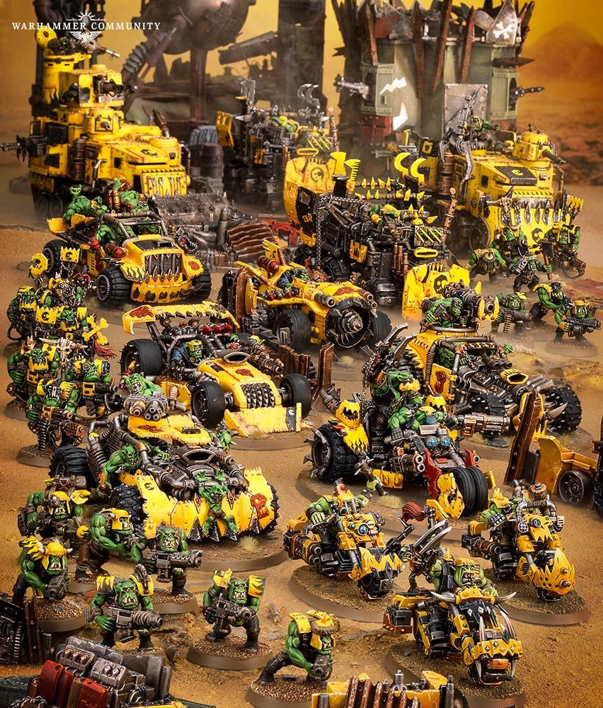
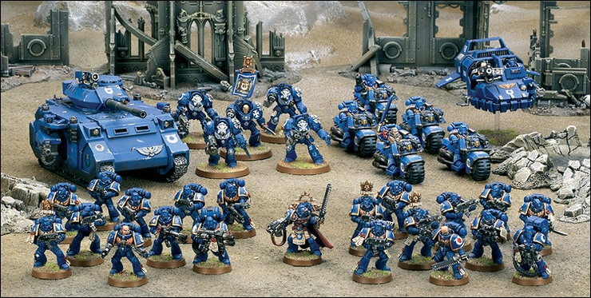
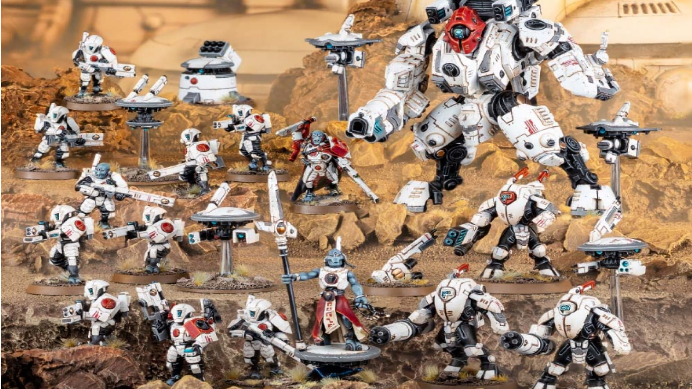
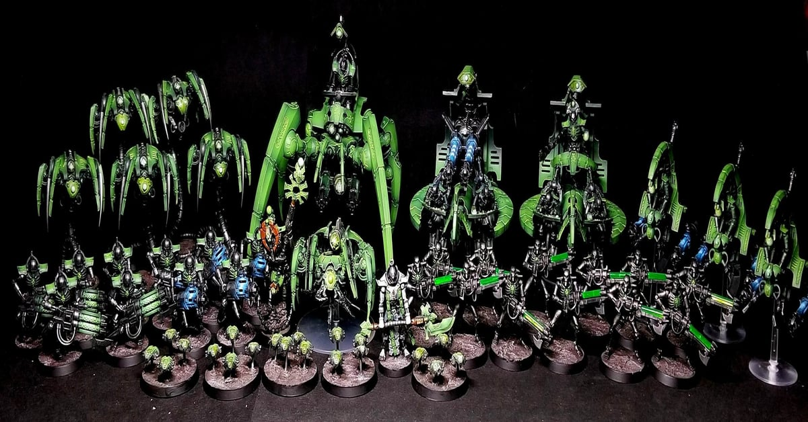
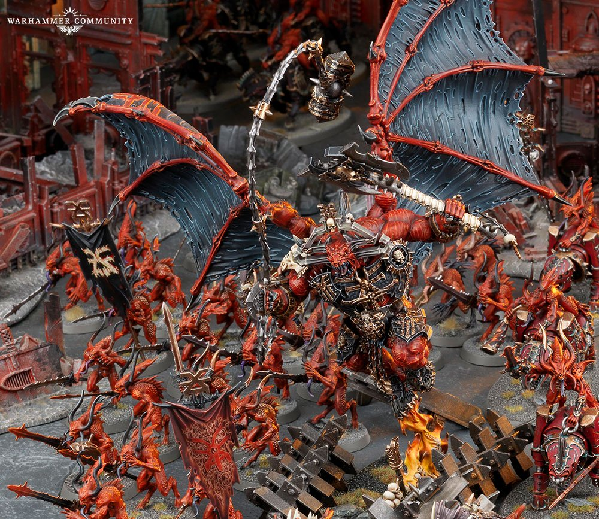

Example Army Compositions
Army 1 - Orks
| Unit Name | Type | Loadout | Quantity | Point Cost |
|---|---|---|---|---|
| Warboss | Character | Attack squig, Big choppa, Warlord | 1 | 65pts |
| Boyz | Troops | Slugga, Choppa | 10 | 85pts |
| Boyz | Troops | Slugga, Choppa | 10 | 85pts |
| Boyz | Troops | Shoota, Close combat weapon | 10 | 85pts |
| Gretchin | Troops | Close combat weapon, Grot blasta | 10 | 40pts |
| Warbikers | Fast Attack | Choppa, Close combat weapon, Twin dakkagun | 5 | 140pts |
Tough, brutal, and impossibly numerous, the Orks are one of the most dangerous species in the galaxy. Their marauding warbands and colossal hordes have threatened Humanity since before the dawn of the Imperium, for Orks thrive on battle and mayhem, roaming the stars in search of a good fight.
Army 2 - Space Marines
| Unit Name | Type | Loadout | Quantity | Point Cost |
|---|---|---|---|---|
| Lieutenant | Character | Heavy Bolt Pistol, Master-crafted Bolt Rifle, Master-crafted Power Weapon, Warlord | 1 | 65pts |
| Heavy intercessor Squad | Troops | Bolt Pistol, Close Combat Weapon, Heavy Bolt Rifle | 4 | 105pts |
| Intercessor Squad | Troops | Bolt Pistol, Bolt Rifle, Close Combat Weapon | 12 | 170pts |
| Tactical Squad | Troops | Bolt Pistol, Boltgun, Close Combat Weapon | 10 | 160pts |
There is no combat theatre in which the Space Marines cannot excel, no foe they cannot overcome, and no danger they fear to face. They are the elite shock troops of the Imperium, whose lightning-fast campaigns are conducted with such spectacular brutality that they have come to be known as the Angels of Death.
Army 3 - Tau
| Unit Name | Type | Loadout | Quantity | Point Cost |
|---|---|---|---|---|
| Cadre Fireblade | Character | Marker Drone, Shield Drone, Warlord | 1 | 40pts |
| Cadre Fireblade | Character | Marker Drone, Shield Drone | 1 | 40pts |
| Strike Team | Troops | Close combat weapon, Pulse pistol, Pulse rifle | 10 | 80pts |
| Strike Team | Troops | Close combat weapon, Pulse pistol, Pulse rifle | 10 | 80pts |
| Strike Team | Troops | Close combat weapon, Pulse pistol, Pulse rifle | 10 | 80pts |
| Broadside Battlesuits | Heavy Support | Battlesuit support system, Heavy rail rifle, Twin smart missile system | 3 | 180pts |
Dynamic and supremely confident, the T’au have established a powerful empire of countless species working toward the philosophy of the Greater Good. This once-small civilisation now spreads like wildfire across the stars, its diplomatic efforts backed by armies of advanced battlesuits and alien auxiliaries, as it seeks to show its enemies the error of their ways.
Army 4 - Necrons
| Unit Name | Type | Loadout | Quantity | Point Cost |
|---|---|---|---|---|
| Overlord | Character | Resurrection orb, Staff of light, Warlord | 1 | 85pts |
| Royal Warden | Character | Resurrection orb, Staff of light | 1 | 40pts |
| Royal Warden | Character | Resurrection orb, Staff of light | 1 | 40pts |
| Necron Warriors | Troops | Close combat weapon, Gauss flayer | 10 | 100pts |
| Necron Warriors | Troops | Close combat weapon, Gauss flayer | 10 | 100pts |
| Lychguard | Troops | Hyperphase sword, dispersion shield | 10 | 85pts |
| Lokhust Heavy Destroyers | Fast Attack | Enmitic exterminator | 1 | 50pts |
After aeons of hibernation, the deathless android legions of the Necrons rise across the galaxy. Armies of living metal march from crumbling stasis-tombs, armed with arcane technology and nigh-impervious to damage. Ruled by maniacal Overlords intent on restoring their ancient empire, the Necrons will remind the galaxy of their cold and terrifying wrath.
Army 5 - Daemons of Khorne
| Unit Name | Type | Loadout | Quantity | Point Cost |
|---|---|---|---|---|
| Bloodmaster | Character | Warlord | 1 | 75pts |
| Bloodletters | Troops | Daemonic Icon, Hellblade | 10 | 140pts |
| Bloodletters | Troops | Daemonic Icon, Hellblade | 10 | 140pts |
| Flesh Hounds | Fast Attack | Collar of Khorne, Gore-drenched fangs | 4 | 70pts |
| Flesh Hounds | Fast Attack | Collar of Khorne, Gore-drenched fangs | 4 | 70pts |
No foe of the Imperium is more malignant, nor more terrible, than the daemons of Chaos, the numberless foot soldiers of the Ruinous Powers. Spawned in the depths of the warp, these otherworldly legions take forms drawn from the darkest nightmares and cruellest desires of mortal minds, and will stop at nothing to see reality itself torn apart.